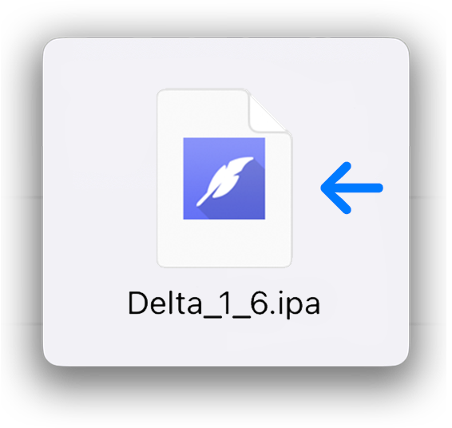

Congratulations! You have successfully set up your device for sideloading apps.
This section will guide you through the process of sideloading an app using the Feather app. To sideload an app, open the Feather app and go to the Library tab.
Click on the Import and select the IPA file you want to install. It might take a while to import the app, depending on the size of the IPA file.
The app will show up in the Downloaded Apps section.
Click on the app and select Sign.
Click on Start Signing and wait for the app to finish signing.
The app will now show up in the Signed Apps section.
Click on the app in that section and click on Install.

You will get a pop-up asking to open the page in iTunes. Click on Open.
Finally, you will get a pop-up asking to install the app. Click on Install.
The app should now show up on your home screen. If you want to free up some space, you can go to the Library tab and delete both instances of the app in there.